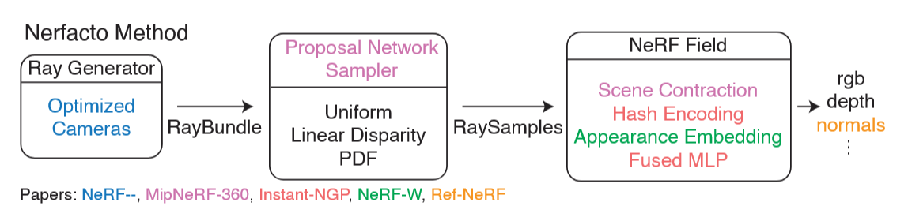
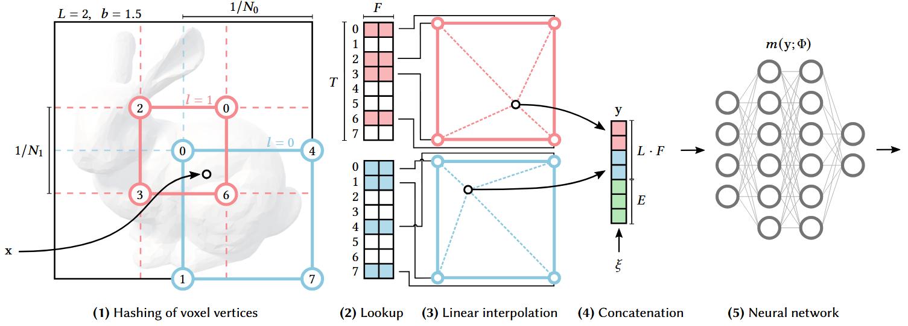
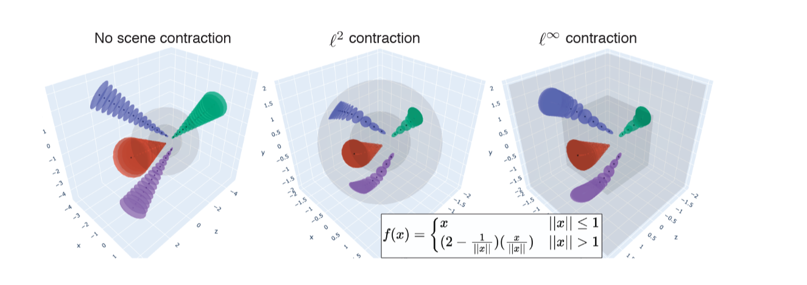
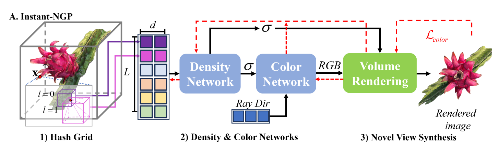
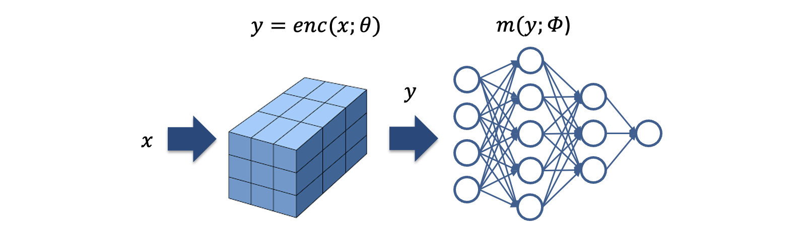
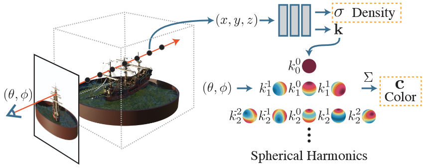
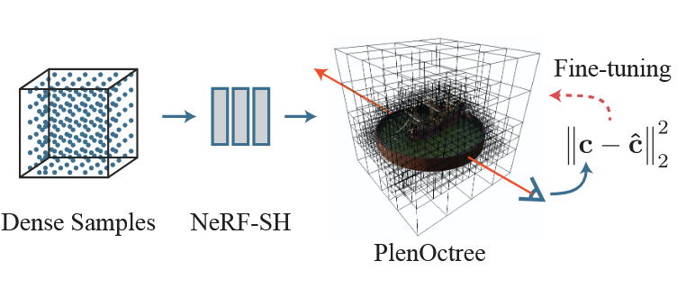

Nerfacto

Nerfacto is a modular and op-
timized NeRF variant developed within the Nerfstudio framework. It com-
bines ideas from multiple recent works to improve sampling efficiency, sup-
port large-scale outdoor scenes, and adapt to real-world image variability. Its
architecture is inspired by Mip-NeRF 360 [23] but simplifies and replaces key
components for better speed and robustness.
- Efficient sampling with proposal networks (256 → 96 → 48 samples per ray).
- Uses Multi-Resolution Hash Encoding from Instant-NGP.
- Applies L∞ scene contraction for large-scale outdoor scenes.
- Appearance embeddings for illumination robustness.

Multi-Resolution Hash Encoding: Maps 3D points into multiple resolution grids using hashed feature tables.
Coarse levels capture global structure, fine levels capture details, enabling high-quality reconstruction with reduced memory.

L∞ Scene Contraction: Transforms unbounded 3D coordinates into a finite cube aligned with voxel grids, preserving spatial relations and improving memory efficiency for large-scale scenes.
Balanced for UAV datasets — good quality with moderate training time.
Instant-NGP

Instant-NGP Pipeline: Combines hash encoding, a compact CUDA-accelerated MLP, and an occupancy grid to train NeRFs in seconds.
- Uses Multi-Resolution Hash Encoding (same core idea as Nerfacto).
- Tiny MLP (2×64) fully CUDA-accelerated.
- Occupancy grid to skip empty space.
- Trains in minutes or even seconds while keeping high visual quality.

Multi-Resolution Hash Encoding (see Nerfacto section)
Instead of using Sinusoidal positional encodings as shown in Table 1
of the WG1N101056, ISO/IEC JTC 1/SC 29/WG 1 2025 JPEG Task Force Draft Report, Instant-NGP uses a compact
multi-resolution hash encoding, detailed earlier in the Nerfacto subsec-
tion. This encoding provides rich geometric features
with low memory cost and is a key factor in Instant-NGP’s speed.
Fast Training - Optimized for extreme training speed.
NeRF-SH

In NeRF-SH, color is not predicted directly by the MLP as RGB values.
Instead, the network outputs SH coefficients at each spatial location.
This enables efficient and continuous modeling of view-dependent ap-
pearance without explicitly passing the viewing direction to the MLP
during inference
- Predicts Spherical Harmonics coefficients for view-dependent color.
- No view direction input in the MLP.
- Converted to PlenOctree for real-time rendering.
- Editable representation (direct SH/density tuning).
NeRF-SH Training: Predicts spherical harmonics coefficients for view-dependent color, along with volumetric density, without directly taking viewing direction as MLP input.

Best suited for interactive and real-time visualization.